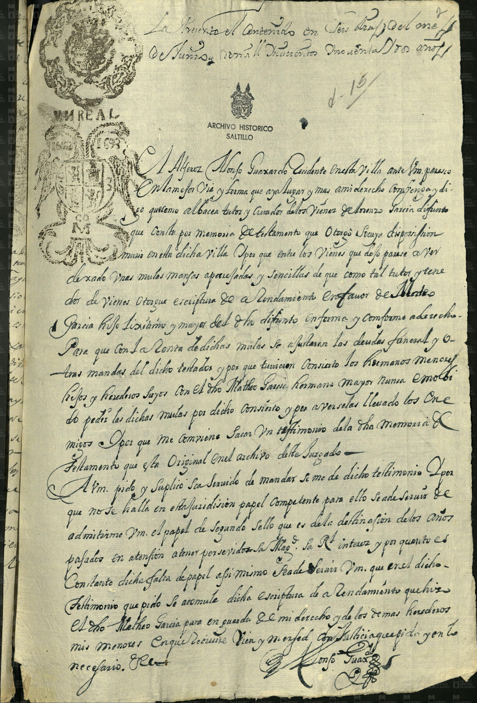
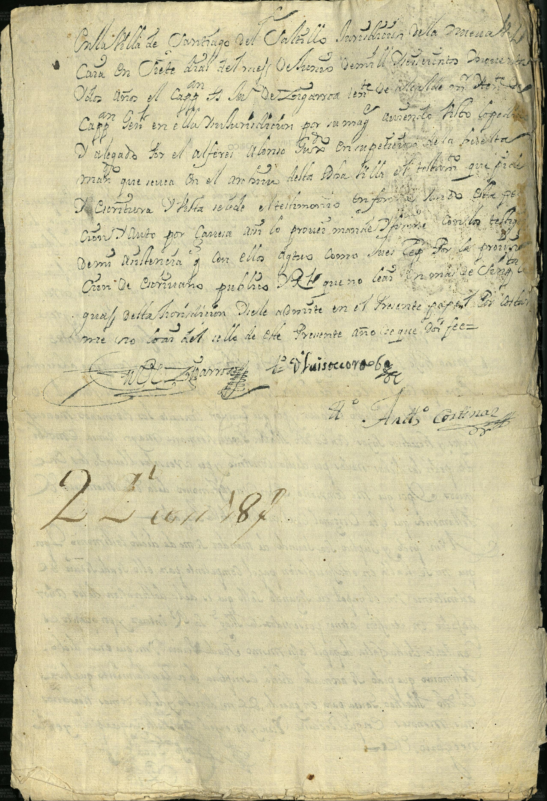

Lorenzo García (difunto) · Mateo García · Alonso Guajardo


| Fondo | Presidencia Municipal (PM) |
| Firma AMS | AMS, PM, c 2, e 56, d 15, 2 ff |
| Fecha | 12 de octubre de 1675 (según la ficha del catálogo; las fechas manuscritas visibles quedan [duda]) |
| Descripción de la ficha del catálogo (tal cual) | El alférez Alonso Guajardo, tutor y curador de los hijos de Lorenzo García, pide se le ajusten cuentas a Mateo García por el arrendamiento de las mulas de la testamentaria. |
| Id de ficha en el portal | 48821 |
| Personas indexadas en la ficha | Alonso Guajardo, Lorenzo García, Mateo García |
Lectura paleográfica parcial. Lo que no se lee con certeza está marcado [ilegible] o [duda: …] y no se toma como dato.
Imagen 1 (anverso). Sellos impresos «UN REAL» [duda: años 1692 y 1693].
Nota de presentación: «Presento el contenido en tres fojas del mes de [duda: Junio] de mill seiscientos y setenta y [duda: dos] años.» Número a lápiz «d-15».
«El alférez Alonso Guaxardo, vecino de esta villa, ante vm parezco en la mejor vía y forma que haya lugar y más a mi derecho convenga, y digo que siendo albacea, tutor y curador de los bienes de Lorenzo García, difunto, que consta por memoria de testamento que otorgó a su disposición, murió en esta dicha villa. Y porque entre los bienes que dexó parece haber dexado unas mulas mansas aparejadas y sencillas, de que como tal tutor y tenedor de bienes otorgué escritura de arrendamiento en favor de Matheo García, hijo legítimo y mayor del dicho difunto, en forma y conforme a derecho, para que con la renta de dichas mulas se ajustaren las deudas, funeral y otras mandas del dicho testador.»
«Y porque tuvieron [duda: concierto] los hermanos menores, hijos y herederos suyos, con el dicho Matheo García, hermano mayor, nunca [duda: me molestaron] a pedir las dichas mulas por dicho concierto, y por habérselas llevado los [duda: enemigos] …» [ilegible]
«Y porque me conviene sacar un testimonio de la dicha memoria de testamento, que está original en el archivo de este juzgado, a vm pido y suplico sea servido de mandar se me dé dicho testimonio. Y porque no se halla en esta jurisdicción papel competente para ello, se ha de servir vm admitirme el papel de segundo sello que es de la destinación de los años pasados, en atención a tener por servido [duda: su Majestad] … y por cuanto es constante dicha falta de papel, así mismo sea de servir vm que en el dicho testimonio que pido se acomule dicha escritura de arrendamiento que hizo el dicho Matheo García, para en guarda de mi derecho y de los demás herederos mis menores, en que recibiré bien y merced con justicia que pido y en lo necesario etc.»
Firma: «Alonso Guaxardo» (rúbrica).
Imagen 2 (anverso de la hoja siguiente).
«En la villa de Santiago del Saltillo, jurisdicción de la [duda: Nueva Vizcaya], en [duda: siete] días del mes de [duda: agosto] de mill seiscientos [duda: setenta y …] años, el Cap.n [duda: Joseph de Zegarra], teniente de alcalde mayor y capitán a guerra en ella y su jurisdicción por su Majestad, habiendo visto lo pedido y alegado por el alférez Alonso Gua[xardo] en petición de [duda: la hoja antecedente], mandó que se saque en el archivo de esta dicha villa el testimonio que pide, [duda: y la escritura] … en forma … con este auto por carecer … el papel … y por la provisión … que no ley [duda] … conforme … no hay en esta jurisdicción papel sellado, se admite en el presente papel común por constar … no haber del sello de este presente año, doy fe.»
Firmas: [duda: «Joseph de Zegarra»] (rúbrica) «… Ante mí, [duda: Antonio Cortinas]».
Número a lápiz o tinta moderna [ilegible: «22 … 187»].
El resto muestra en espejo el texto del otro lado.
Imagen y ficha: Archivo Municipal de Saltillo, Sefarad MX. Fuente: Archivo Municipal de Saltillo, portal del archivo digital (Presidencia Municipal). Verificado y avalado por Sefarad MX · genealogiasefardi.site.